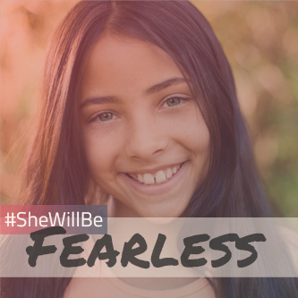
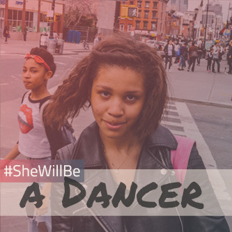
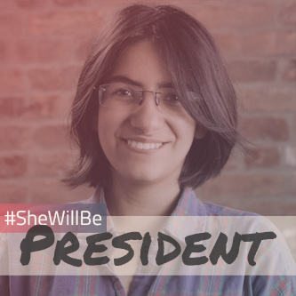
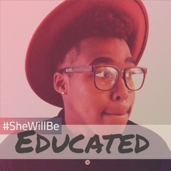
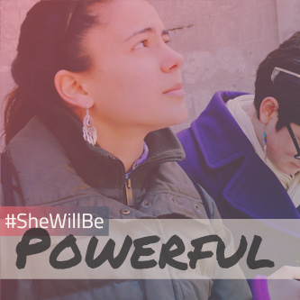
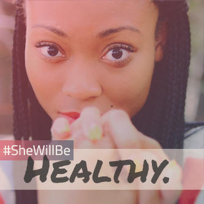

We're listening to your ideas for change.
The New York City Council wants to know what kind of services or support you need to be successful.
Use the #SheWillBe hashtag to tell us how we can help you be who you want to be!
- 
- 
- 
- 
- 
- 
Join the campaign!
- Take a selfie and add your word.
- Download and share with #SheWillBe.
- Tell us what you need to succeed.